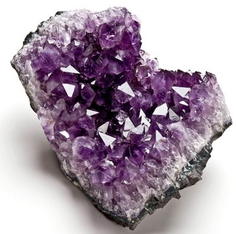
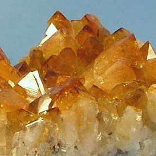

Desde tiempos remotos las formas y propiedades de los minerales, cristales y rocas han sido objeto de admiración, codicia, superstición y necesidad.
La civilización moderna depende extraordinariamente de los minerales. Su uso cotidiano está presente en diferentes campos de la actividad humana.
Todos los artículos inorgánicos comerciales o son minerales en sí mismos o son de origen mineral. Los minerales se usan por ejemplo en medicina, joyería, alimentación, cosmética y para fabricar diferentes productos, desde pinturas a herramientas, edificios y ordenadores.
Además, los minerales y las rocas están presentes en el entorno físico en el que habitamos (por ejemplo, rocas de montañas, arenas de playa, suelos de parques y jardines) y su estudio contribuye al conocimiento de la formación de nuestro planeta y del universo.
El átomo es la unidad fundamental de la materia, una partícula de dimensión alrededor de 10-8 cm. La punta de un alfiler tiene un diámetro donde caben cerca de un millón de átomos.
El átomo es la unidad más pequeña de un elemento químico, que mantiene su identidad y sus propiedades y que no es posible dividir mediante procesos químicos.
Existen diferentes tipos de átomos según su estructura interna. Las especies atómicas, o elementos químicos, se definen por su número atómico (Z): el número de protones, que tienen carga positiva. Átomos de un mismo elemento químico tienen el mismo número de protones pero pueden tener un diferente número de neutrones. Estos átomos se denominan isótopos de un determinado elemento químico, y se definen por su número de masa (A): número de protones + número de neutrones.
Los electrones son partículas de carga negativa que se mueven alrededor del núcleo de los átomos, y tienen una masa mucho más pequeña que la de los protones y neutrones del núcleo.
Los elementos químicos se representan por siglas y se recogen en la Tabla periódica de los elementos.
Un compuesto químico es una sustancia formada por la unión de dos o más elementos de diferente naturaleza con una razón fija. Se caracteriza por tener una fórmula química específica.
El agua es el compuesto químico más común en la naturaleza, y está formada por átomos de hidrógeno (H) y oxígeno (O) en la razón de 2 a 1 = H2O.
3.3 MINERALES Y CRISTALES
Un mineral es un sólido homogéneo y natural, normalmente de origen inorgánico, con una composición química y una estructura interna definidas, que puede dar lugar al desarrollo de superficies planas conocidas como caras. Los minerales pueden aparecer de forma aislada con desarrollo o no de caras, o formando agregados cristalinos como componentes fundamentales de las rocas.
La Mineralogía es la disciplina de la Geología que estudia el origen y las propiedades físicas y químicas de los minerales que se encuentran en el planeta.
Hoy en día hay descritos cerca de 2000 minerales pero sólo 200 son medianamente abundantes. Gran parte de la corteza terrestre, la capa más externa del planeta, está formada únicamente por una docena de minerales.
Sólido homogéneo: indica que un mineral consta de una única sustancia sólida. Están excluidas las sustancias en estado gaseoso o líquido. Por ejemplo, el hielo es un mineral, pero el agua en sí misma no lo es.
Sólido natural: los minerales se forman por procesos naturales. Las sustancias sintetizadas en laboratorio por el hombre no son estrictamente minerales.
Origen inorgánico: los minerales se forman normalmente mediante procesos que NO involucran seres vivos. Los pocos minerales que pueden ser producidos por organismos (por ejemplo la calcita de las conchas, CaCO3) se definen biominerales.
Composición química definida: implica que la composición de los minerales puede expresarse mediante una fórmula química específica. La mayoría de los minerales tiene una composición definida pero no fija y presentan impurezas en diferentes proporciones.
Estructura interna definida y periódica: indica que en el interior de los minerales existe una ordenación de los átomos que sigue un modelo regular. Los minerales por lo tanto son sólidos cristalinos y la disciplina científica que estudia su estructura interna es la Cristalografía.
La periodicidad tridimensional de los átomos que forman un mineral le proporciona una estructura interna organizada, fija, constante y única para cada mineral, que puede dar lugar en el exterior a caras planas y raras veces a poliedros perfectos. Aunque no presenten caras cristalinas, todos los minerales tienen una estructura interna ordenada. Este orden interno fijo, periódico y constante de los átomos es característica de la materia cristalina.
Los materiales carentes de estructura interna ordenada, aunque externamente lo aparenten, están formados por materia amorfa. Por ejemplo, el vidrio no es un mineral, ya que su estructura no está geométricamente organizada según un patrón de repetición.
Un cristal es la manifestación externa de la materia cristalina con desarrollo de caras planas. Para que un cristal se forme necesita espacio, por lo que los minerales con caras cristalinas suelen aparecer en grietas o en cavidades vacías como las cuevas.
En un cristal, los átomos se organizan de forma simétrica en celdas elementales que se repiten indefinidamente formando una estructura ordenada en tres dimensiones. Esta organización reticular provoca que muchos cristales sean anisótropos, o sea que sus propiedades físicas varíen según la dirección dentro del cristal.
La distribución de los átomos dentro de las celdas elementales obedece a precisas reglas de simetría que definen 7 sistemas cristalográficos:
La materia cristalina no es intrínseca sólo a los minerales. Por ejemplo, las proteínas, las vitaminas, la cerámica, el nylon, los virus, los dientes son también materiales cristalinos. Por lo tanto, la Cristalografía es una ciencia fundamental no solamente para la Geología y las Ciencias Ambientales, sino también para la Química, la Biología, la Medicina, la Farmacología y las Ciencias de los Materiales.
3.4 PROPIEDADES FÍSICAS DE LOS MINERALES
Son las propiedades que sirven para reconocer los minerales en muestras de mano.
a) Brillo: aspecto o calidad de la luz reflejada por el mineral. En general se clasifica como metálico o submetálico (vítreo, resinoso, nacarado, graso).
-
Brillo metálico
-
Brillo submetálico
b) Color: raramente es diagnóstico de un mineral. A menudo varía por la presencia de impurezas metálicas
-
Amatista

Amatista (cuarzo con impurezas de Fe)
-
Cuarzo citrino

Cuarzo citrino (cuarzo con impurezas de Ni)
c) Raya: color de un mineral en polvo. Suele ser más diagnóstica que el color de los cristales
d) Hábito: forma común característica de los cristales en tres dimensiones. Por ejemplo:
-
Prismático
-
Tabular
-
Reniforme
e) Tenacidad: resistencia de un mineral a romperse cuando es golpeado
f) Dureza: resistencia de un mineral a ser rayado. Se mide en una escala empírica (escala de Mohs) donde los minerales son ordenados según su dureza relativa. El talco (grado 1) es el mineral más blando, y el diamante (grado 10) es el mineral más duro. En la escala de Mohs la uña tiene una dureza de grado 2.5 (raya el talco y es rayada por la calcita).
g) Exfoliación: tendencia de un mineral a romperse a lo largo de planos separados por enlaces débiles entre los átomos
h) Peso específico: relación entre el peso del mineral y el peso de un volumen igual de agua. Para muchos minerales varía entre 2 y 3
Una roca es un agregado sólido cohesionado de origen natural formado por minerales.
La mayoría de las rocas están compuestas por diferentes minerales, y son llamadas poliminerales. Pero algunas rocas pueden ser de composición monomineral, como la caliza que está formada únicamente por calcita (CaCO3).
En la corteza terrestre se distinguen tres tipos de rocas:
Rocas magmáticas (o ígneas): formadas por la solidificación de magma o lava
Rocas sedimentarias: formadas por la consolidación de sedimentos (materiales procedentes de la meteorización (alteración) y erosión de rocas en superficie), precipitación a partir de una solución acuosa, o acumulación de esqueletos de organismos
Rocas metamórficas: formadas por transformación en estado sólido de rocas más antiguas (magmáticas, sedimentarias o metamórficas), al estar estas sometidas a condiciones ambientales (principalmente de presión y temperatura) muy diferentes a las de su formación
Estos tres tipos de rocas experimentan continuos cambios por las acciones de los agentes geológicos, según un ciclo cerrado llamado ciclo de las rocas, en el cual pueden intervenir incluso los seres vivos.


{kind=link}
{kind=link}
{kind=link}
{kind=link}
{kind=link}
{kind=link}
{kind=link}
{kind=link}
{kind=link}
{kind=link}
{kind=link}
{kind=link}
{kind=link}
{kind=link}
{kind=link}
{kind=link}
{kind=link}
{kind=link}
{kind=link}
{kind=link}
{kind=link}